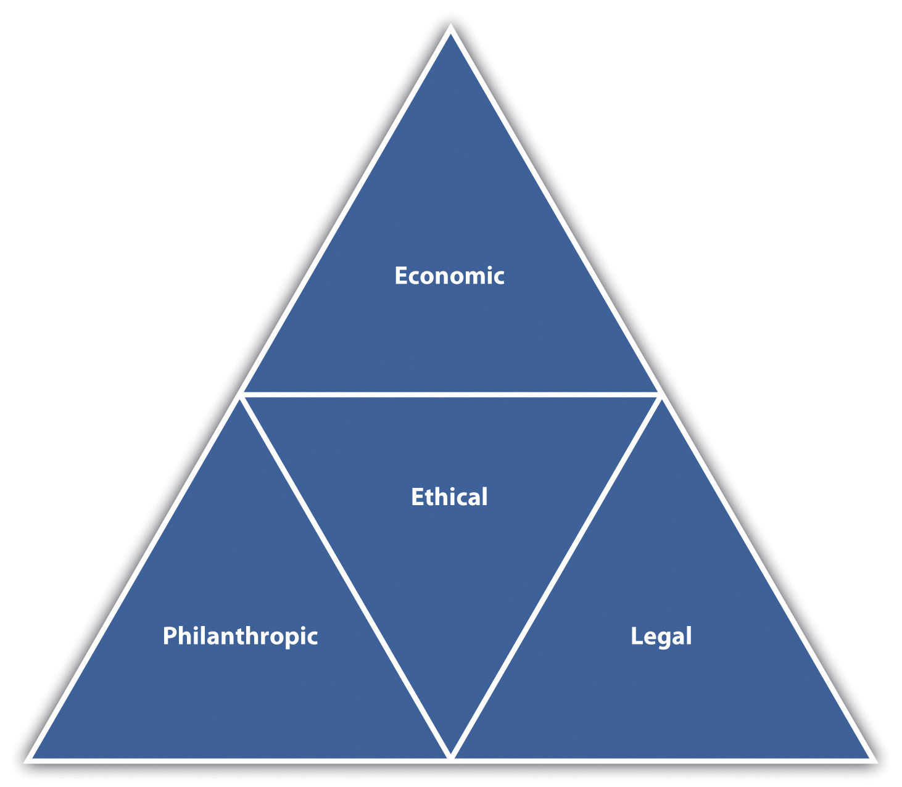
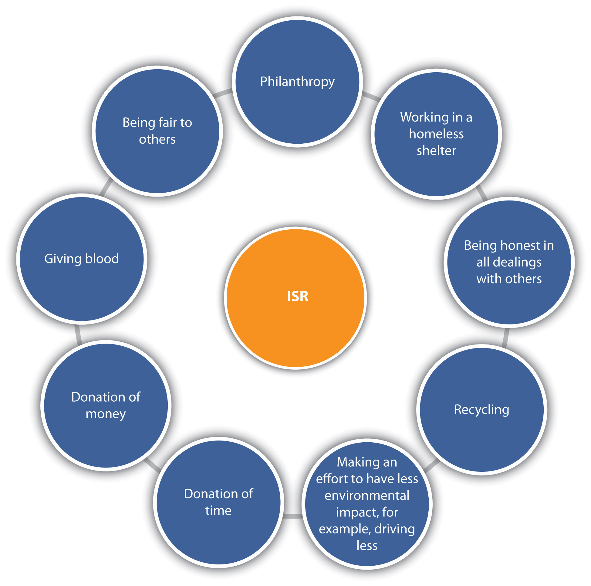

No chapter on ethics would be complete without a discussion on social responsibility. People, not only companies, can engage in social responsibility. Being socially responsible shows both social awareness and self-management skills—that is, an awareness of how our decisions affect others. This section will first discuss social responsibility on the corporate level and then social responsibility on the individual level. As we discussed with ethical company standards, it is difficult to separate corporate ethics and corporate social responsibility from individual ethics and social responsibility, since people are the ones making the corporate policies. For purposes of this section, we will first discuss social responsibility on the corporate level and then on the individual level.
Since social responsibility was first mentioned in the 1960s, companies have felt pressure from society to behave in a more socially responsible manner. Social responsibilityThe duty of business to do no harm to society. is the duty of business to do no harm to society. In other words, in their daily operations, businesses should be concerned about the welfare of society and mindful of how its actions could affect society as a whole. We know that social responsibility doesn’t always happen, despite the seemingly best efforts of a company. For example, court papers accuse British Petroleum (BP) of gross negligence for safety violations and knowingly failing to maintain the oil rig, which caused the death of eleven workers and leaked oil in the Gulf of Mexico for eighty-seven days.United Press International. (2012, February 24). BP trial will push gross negligence claim, accessed February 24, 2012, http://www.upi.com/Business_News/2012/02/24/BP-trial-will-push-gross-negligence-claim/UPI-22771330126860/ In this case, and others like it, people question the ability of companies to fulfill their duty to society. Ideally, companies should look at four main areas of social responsibility and act ethically in all four areas. In fact, even as individuals we should be aware of these areas of social responsibility, which we will discuss in this section. Those four areas are the following:Carroll, A. (n.d.). The pyramid of corporate social responsibility. Business Horizons, accessed February 24, 2012, http://cf.linnbenton.edu/bcs/bm/gusdorm/upload/Pyramid%20of%20Social%20Responsibility.pdf
Based on these areas, many believe business should go above and beyond the law to act ethically, meet expectations of society, and even go beyond by donating profit back to the communities in which the businesses operate. As we mentioned at the start of this section, businesses are not the only ones who engage in social responsibility. Since people run businesses, often we see business social responsibility initiatives that are directly related to individuals in the organization. For example, the Body Shop founder, Anita Roddick,Lyall, S. (2007, September 12). Anita Roddick, founder of the Body Shop, dies at 64. New York Times, accessed June 2, 2012, http://www.nytimes.com/2007/09/11/style/11iht-obits.4.7467721.html cared deeply for the environment and for animals, and as a result, her organization (now owned by L’Oreal) focused on environmentally friendly products and products that did not test on animals. This is an example of how social responsibility in organizations can be a direct result of the individual’s care and concern.
Figure 5.5 The Four Areas of Social Responsibility
Companies should strive to meet all areas of social responsibility.
Erik Joule, senior vice president of merchandising and design for Levi Strauss, discusses social responsibility issues.
More recently, social responsibility has been looked at as going above and beyond even philanthropy. Past ideas on social responsibility implied that businesses must trade off social responsibility for profits—in other words, in order to make profit, businesses had to actually harm society. This way of thinking has changed with the idea of creating shared value. This concept, created by Michael E. Porter and Mark R. Kramer of Harvard University, attempts to dispel this myth by presenting a new view on social responsibility.Porter, M. E., & Kramer, M. R. (2011, January). Creating shared value. Harvard Business Review, accessed February 24, 2012, http://hbr.org/2011/01/the-big-idea-creating-shared-value Creating shared value (CSV)Creating shared value is the premise that companies and the community are tied closely together, and if one benefits, they both benefit. is the premise that companies and the community are tied closely together, and if one benefits, they both benefit. For example, if companies donate money to schools, it actually benefits both the community and the company in that a better educated workforce can be profitable for the company in the long run. The idea that social responsibility is something that costs companies money is no longer in favor. In fact, behaving socially responsibly can help a company save money. Small things, such as turning off computers at night, result in cost savings in electricity and are the right thing to do from a social responsibility perspective, too. As Porter and Kramer have pointed out through their research, benefiting the community does not have to be at the cost of the company or of society; both can work in tandem.
As we have already discussed, even though we say companies are socially responsible (or not), individuals in the organization are the ones who create policies surrounding social responsibility efforts. As individuals, our emotional intelligence skills, such as social awareness and empathy, can be shown through our use of social responsibility efforts within an organization but also through our personal social responsibility efforts. ISR (individual social responsibility)An individual’s awareness of how personal actions have an effect on the community. is defined as an individual being aware of how personal actions have an effect on the community. ISR can include the following:
Figure 5.6 Some Examples of Individual Social Responsibility
Engaging in ISR activities such as these can help us develop our emotional intelligence skills through the use of social awareness—that is, understanding how our actions can affect others and engaging in empathy for others. In addition, we can build our self-esteem and self-perception by helping othersBénabou, R. & Tirole, J (2010). Individual and corporate social responsibility. Economica, 77, 1–19. and engaging in socially responsible activities. As we have discussed throughout the chapter, to improve human relations skills, we must understand that ethics, social responsibility, and emotional intelligence skills are intertwined with each other. Those who continually develop their emotional intelligence skills will likely engage in ethical and socially responsible behavior, both personally and as leaders of their organizations.